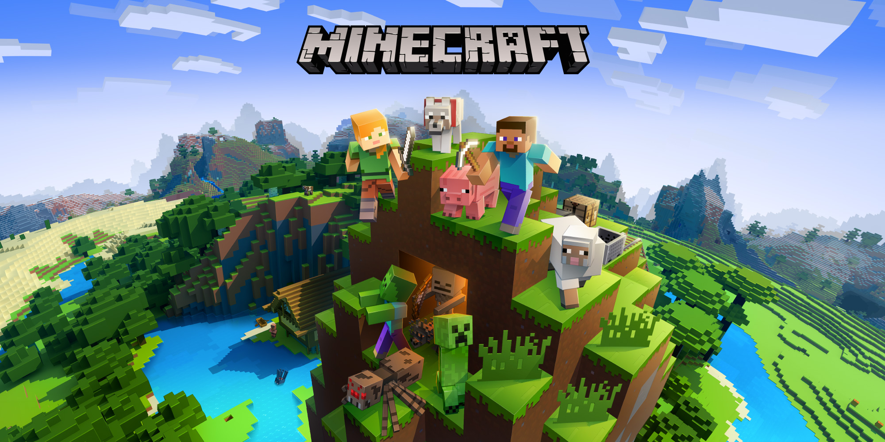
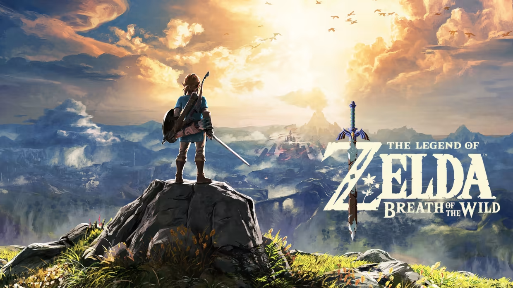
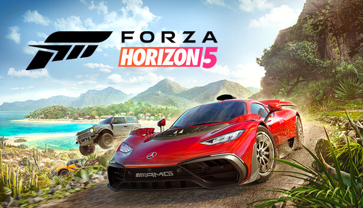

Uma lista com os melhores jogos na minha opinião
Grand Theft Auto V (GTA V)

Grand Theft Auto V (GTA V) é um jogo de ação-aventura desenvolvido pela Rockstar North e publicado
pela Rockstar Games. Lançado em setembro de 2013, o jogo rapidamente se tornou um dos mais populares
e bem-sucedidos da história dos videogames, tanto em termos de vendas quanto de crítica.
Red Dead Redemption 2
Red Dead Redemption 2 é um jogo eletrônico de ação e aventura desenvolvido pela Rockstar Games,
lançado em 2018. Ele é ambientado no final do século XIX, no Velho Oeste americano, e serve como
prelúdio para o jogo Red Dead Redemption lançado anteriormente. A história segue Arthur Morgan,
um fora-da-lei e membro da gangue Van der Linde, liderada por Dutch van der Linde.
The Witcher 3: Wild Hunt
The Witcher 3: Wild Hunt é um jogo de RPG de ação desenvolvido pela CD Projekt Red, lançado
em 2015. É o terceiro título da série The Witcher, baseada nos livros do autor polonês Andrzej Sapkowski.
O jogo se passa em um vasto mundo aberto de fantasia, onde o jogador assume o controle de Geralt de Rivia,
um caçador de monstros conhecido como bruxo.
Minecraft
Minecraft é um jogo de construção e sobrevivência desenvolvido pela Mojang Studios, lançado oficialmente
em 2011. Criado por Markus "Notch" Persson, o jogo se tornou um dos títulos mais populares e influentes
da história dos videogames.
TLOZ: Breath of The Wild
The Legend of Zelda: Breath of the Wild é um jogo de ação e aventura desenvolvido pela Nintendo e
lançado em 2017 para o Nintendo Switch e Wii U. É o décimo nono título principal da série
The Legend of Zelda e foi aclamado como uma das obras-primas dos videogames.
Elden Ring
Elden Ring é um jogo de RPG de ação desenvolvido pela FromSoftware e publicado pela Bandai Namco
Entertainment, lançado em fevereiro de 2022. Dirigido por Hidetaka Miyazaki, o criador da série Dark Souls,
Elden Ring também teve a colaboração do escritor George R.R. Martin, conhecido por sua série de livros
As Crônicas de Gelo e Fogo, na construção do lore e do mundo do jogo.
Forza Horizon 5
Forza Horizon 5 é um jogo de corrida em mundo aberto desenvolvido pela Playground Games e publicado
pela Xbox Game Studios. Lançado em novembro de 2021 para Xbox Series X|S, Xbox One e PC, é o quinto
título principal da série Forza Horizon e o décimo segundo jogo da franquia Forza.